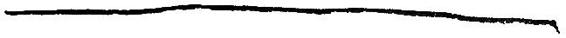

YAZAR HAKKINDA
Newton (“NEWT”) Artemis Fido Scamander 1897'de doğdu. Efsanevi canavarlara duyduğu ilgi, gösterişli Hipogrif'leri yetiştirmeye çok meraklı olan annesi tarafından teşvik edildi. Mr. Scamander, Hogwarts Cadılık ve Büyücülük Okulu'ndan mezun olduktan sonra Sihir Bakanlığı'na girdi, Sihirli Yaratıkların Düzenlenmesi ve Denetimi Dairesi'nde çalışmaya başladı. Ev-Cinlerinin Yerleştirilmesi Dairesi'nde, "son derece sıkıcı" olarak tanımladığı iki yıl geçirdikten sonra, Canavarlar Bölümü'ne atanıp, garip ve sihirli canavarlar hakkındaki mükemmel bilgisi sayesinde orada hızla terfi etti.
1947'deki Kurtadam Kayıtları'nın yaratılmasından neredeyse tek başına sorumlu olmasına rağmen, en çok, 1965'te onaylanmış olan ve Britanya'da yeni ve ehlileştirilemez canavarların yaratılmasını etkin biçimde engelleyen Deneysel Yetiştirme Yasağı ile gurur duyduğunu söyler. Mr. Scamander'ın Ejderha Araştırma ve Kısıtlamaları Bürosu ile olan çalışmaları, ülkesi dışında birçok araştırma gezisine çıkmasına yol açtı. Bu çalışmalar sırasında, şimdi 52'nci baskısı yapılan dünya çapındaki çok-satan kitabı “Fantastik Canavarlar Nelerdir, Nerede Bulunurlar?” kitabı için bilgi topladı.
Newt Scamander, sihirli canavarların incelenmesi bilimi Büyüzooloji'ye hizmetleri nedeniyle 1979'da İkinci Sınıf Merlin Nişanı'yla ödüllendirildi. Şimdi emekli olan yazar, eşi Porpentina ve ehli Mıncık'ları Hoppy, Milly ve Mauler ile Dorset'te yaşıyor.